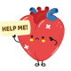

بلوک درجه ۲،۳
Amp Dopamin2-10mic/kg/min
Or Amp Epinephrin 2-10mic/kg/min
در صورتی که بلوک عارضه مسمومیت با B بلوکر وCCB باشد میتوان از گلوکاگون استفاده کرد.
انواع بلوک قلبی
1st degree block
prolongation of PR interval (>0.2s)
2nd degree Mobitz type I (Wenckebach) block
progressive lengthening of PR interval with eventual dropped ventricular conduction
2nd degree Mobitz type II (Hay) block
intermittent dropping of ventricular conduction
2nd degree (2:1 type) block
alternate p-wave not conducted to ventricles
3rd degree block (complete heart block)
complete dissociation between atria and ventricular
1️⃣ بلاک قلبی مادرزادی
2️⃣ بلوک درجه ۱
Atrioventricular Dissociation 3️⃣
Junctional Rhythm 4️⃣
Multifocal Atrial Tachycardia 5️⃣
6️⃣ اختلال الکرولیتی مثل هایپرکالمی
Sinus bradycardia 7️⃣
8️⃣ هایپوترمی
sinoatrial exit block 9️⃣
🔟 Non conducted PAC
MI 1️⃣1️⃣
1️⃣2️⃣ عارضه جانبی دارو
Digoxin toxicity 1️⃣3️⃣
Beta blocker toxicity 1️⃣4️⃣
Calcium channel blocker toxicity 1️⃣5️⃣